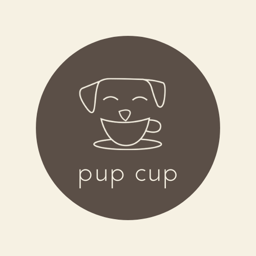

Image Editing
Book Cover - The Lion, The Witch and The Wardrobe

I chose to recreate the book cover for The Lion, The Witch, and The Wardrobe by C.S. Lewis, a story that revolves around the battle between good and evil. The main characters representing this conflict are the lion, Aslan, and the White Witch, so I decided to make them the focal points of my cover design. To emphasize their roles, I chose orange hues for the lion to represent warmth and good, while using blue tones for the witch, representing her association with ice and cold.
Logo - Pup Cup
I decided to design a logo for a fictitious pet cafe called "Pup Cup." I wanted the logo to be simple yet playful, to reflect the fun and cozy atmosphere of the cafe. My goal was to avoid making the logo visually busy, while still giving it a sense of warmth and inviting charm. I’m really pleased with how the logo turned out. The combination of simple shapes, minimalist font, and warm colors gives it a clean and modern look, while still retaining the playful and friendly spirit that fits a pet-themed cafe. The design isn't overly complex, but the integration of the cup into the puppy's smile adds a fun, witty touch that ties the theme together nicely.